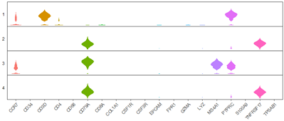
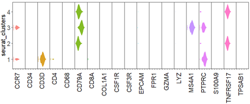
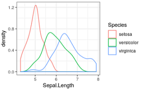
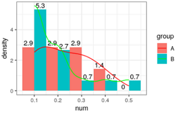
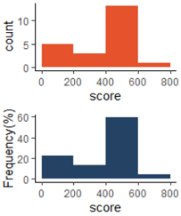
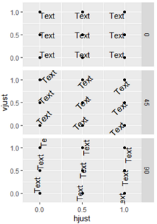
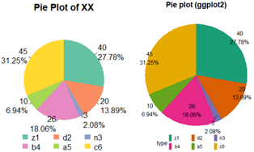

R绘图 使用ggplot2进行高级绘图
目录
要点: lattice和ggplot2包极大地扩展了R绘图的范畴，提高了图形的质量。[R In Action(2nd Edition), Chapter19]
R作图的目的：更好地理解数据，并能够与他人沟通这些理解方式。
ggplot2 包简介
官网 reference 应该是你入门后参考最多的网站。其次是应该打印出来贴墙上的小抄 ggplot2-cheatsheet.pdf。
知名图书： 《R cookbook》, 《R for Data Science》, 《ggplot2: Elegant Graphics for Data Analysis》,
甚至有人写了 python版的ggplot包。
批量小提琴图
目标: Adam et al, Nature 2017 Fig3 c
 #数据为scRNAseq表达量，想看若干基因在不同cluster内的表达情况:
> head(df) #5万行， 3列
seurat_clusters variable value
1480 2 PTPRC 0.0000000
1483 2 PTPRC 0.3043327
> table(df$seurat_clusters)
1 2 3 4
152076 141873 122417 115729
> table(df$variable)
CCR7 CD34 CD3D CD4 CD68 CD79A CD8A COL1A1 CSF1R CSF3R EPCAM FPR1
28005 28005 28005 28005 28005 28005 28005 28005 28005 28005 28005 28005
GZMA LYZ MS4A1 PTPRC S100A9 TNFRSF17 TPSAB1
28005 28005 28005 28005 28005 28005 28005
#
#1. 正常小提琴图
df$seurat_clusters=as.factor(df$seurat_clusters) #一定要注意，分类变量必须是因子！大坑！！
str(df)
p = ggplot(df,aes(x=variable,y=value,fill=variable))+
geom_violin(scale = "width",colour="white") + #小提琴图，边框颜色白色，fill属性为填充颜色
facet_wrap(seurat_clusters~ . ,strip.position = "left",ncol = 1) + #分面，多行
theme_bw() + #白主题
theme(panel.grid = element_blank(), #不要背景
axis.ticks.y=element_blank(), #不要y坐标刻度
axis.text.x = element_text(angle=45,vjust=1,hjust = 1), #x文字倾斜45度
axis.text.y = element_blank(), #不要y轴文字
legend.position = "none", #不要图例
panel.spacing=unit(0,"cm"), #分面间距为0
strip.text.y = element_text(angle = 180),
strip.background = element_blank())
print(p)
#2. 旋转小提琴图
p2 = ggplot(df,aes(x=seurat_clusters,y=value,fill=variable))+
geom_violin(scale = "width",colour="white",alpha=0.85,width=1) +
coord_flip() + #guides(fill=FALSE)
facet_wrap(variable~.,nrow = 1, strip.position = "bottom") +
theme_bw() +
theme(
panel.grid = element_blank(), #不要背景网格
axis.text.x = element_blank(), #不要x坐标轴刻度文字
axis.text.y = element_text(size=15), #y坐标刻度字号
axis.title.y = element_text(size=15), #y标题字号
legend.position = "none", #不要图例
panel.spacing=unit(0,"cm"), #分面的间距
strip.placement = "outside", #分面标签位置
strip.text.x = element_text(angle=90,vjust=1,hjust = 1,size=15), #分面标签 文字倾斜; 字号
strip.background = element_blank() #分面标签 不要背景
)
print(p2)
概率密度曲线图，频率分布直方图
 # 例1 概率密度曲线
ggplot(iris, aes(x = Sepal.Length)) + theme_bw()+
geom_density(aes(color = Species))
# 例2 画频率分布图，使用 y=..density..
df=data.frame(
cid=seq(1,22),
group=c(rep("A",7), rep("B",15) ),
num=c(0.3,0.16, 0.1, 0.2, 0.3, 0.4, 0.1, 0.1, 0.1, 0.2, 0.1, 0.1,
0.1, 0.2, 0.3, 0.4, 0.5,0.1, 0.1, 0.2, 0.2, 0.1 )
) # 两组数据(编号1,2)，每组污染指数
head(df)
#df$group=factor(df$group,levels=c('B','A'))
df$group=factor(df$group,levels=c('A','B'))
# 使用ggplot2 画频率分布直方图，和概率密度曲线
library(ggplot2)
ggplot(df,aes(x=num,y=..density..,fill=group))+
geom_histogram(position = "dodge",binwidth = 0.1)+ #画线
geom_text(aes(label=round(..density..,1)),position = "dodge",
stat="bin",binwidth = 0.1,vjust=-0.3)+ #曲线上数字是高度，是频数/总数/组距
geom_line(stat="density", aes(color=group))+ #只有线条
#geom_density( aes(color=group), alpha=0.5)+ #曲线下面积是1,带阴影，带边框
scale_color_manual(values=c('red','green'))+
theme_bw()#+
xlim(-0.1,0.6) #显示概率密度曲线两端
# 每组频率=频数/总和
table(df$group)
# A B
# 7 15
#
summary(df$num)
#Min. 1st Qu. Median Mean 3rd Qu. Max.
#0.100 0.100 0.150 0.195 0.225 0.500
#
df[which(df$group=='A'),]$num
df[which(df$group=='B'),]$num
# 第一个bin总是 [min, min + binwidth/2)，之后开始正常
nrow(df[which(df$num >= 0.1 & df$num<0.15 & df$group=="A"),])/7/0.1; #4
nrow(df[which(df$num >= 0.1 & df$num<0.15 & df$group=="B"),])/15/0.1; #5.3
#
nrow(df[which(df$num >= 0.15 & df$num<0.25 & df$group=="A"),])/7/0.1; #2.8
nrow(df[which(df$num >= 0.15 & df$num<0.25 & df$group=="B"),])/15/0.1; #2.7
#
# ...
#
## R原生绘图函数 A 一致
hist( df$num[which(df$group=='A')], n=20 )
plot( density(df$num[which(df$group=='A')], n=100) )
#plot( density(df$num[which(df$group=='A')]), xlim=c(0.1,0.5), ylim=c(0,6) )
# R原生绘图函数 B 一致
hist( df$num[which(df$group=='B')], n=20 )
plot( density(df$num[which(df$group=='B')]) )
# 查看A的值
df$num[which(df$group=='A')]
table(df$num[which(df$group=='A')])
# 查看B的值
df$num[which(df$group=='B')]
table(df$num[which(df$group=='B')])
# ggplot2 v3.2.1
频率分布直方图(使用breaks参数，设置分段点)
score=c(122,134,179,118,90,290,235,356,401,404,407,410,
413,416,419,422,425,428,431,434,437, 750)
hist(score, breaks=c(0,199.5,399.5,599.5, 799.5))
library(ggplot2)
#使用频数
g1=ggplot(NULL, aes(x=score, y=..count..))+theme_classic()+
geom_histogram(fill="#E5522C", breaks = c(0,199.5,399.5,599.5,799.5))
#使用频率
g2=ggplot(NULL, aes(x=score, y=..count../sum(..count..)*100 ))+theme_classic()+
geom_histogram(fill="#244264", breaks = c(0, seq(199.5,799.5,200) ) )+
labs(y="Frequency(%)")
library(gridExtra)
grid.arrange(g1,g2,nrow=2)
hjust和vjust
hjust 控制水平对齐和 vjust 控制垂直对齐。
取值[0,1]之间, 0表示左对齐, 1表示右对齐
td=expand.grid(
hjust = c(0,0.5,1),
vjust = c(0,0.5,1),
angle = c(0,45,90),
text =c('Text')
)
td
ggplot(td,aes(x = hjust,y = vjust))+
geom_point()+ #theme_bw()+
geom_text(aes(label = text,angle = angle,hjust = hjust,vjust = vjust))+
facet_grid(angle~.)+
scale_x_continuous(breaks = c(0,0.5,1),expand = c(0,0.2))+
scale_y_continuous(breaks = c(0,0.5,1),expand = c(0,0.2))
饼图，ggplot2 theme和legend的修改
注意：分类变量一定要手动转为因子，自动转换的很可能不是预期的顺序。 df$xx=factor(df$xx, levels=('z1', 'a2', 'd3'))
目标: Eldad et al, nar 2019, Fig3C
########### 画饼图
#数据
x=c(40,20,3,26,10,45)
x2=c('z1','d2','n3','b4','a5','c6')
x3=paste0(x2, "(",x,', ',round(x/sum(x)*100,2),"%)" );x3
x4=(paste0(x, "\n",round(x/sum(x)*100,2),"%" ) );x4
###################
# 原生R函数 画饼图
pie(x)
pie(x,labels=x3) #加上百分比
pie(x,labels=x3,edges = 20) #最外圈的多边形的边的个数(默认200)
pie(x,labels=x3,radius = 0.5) #圈是画在一个正方形内的[0,1](默认0.8)
pie(x,labels=x3,clockwise=T) #顺时针开始画
#lty : 每个扇区的线型（0：无，1：实线；2：短划线；3：点线；4：点划线；5：长划线；6：双划线;）
pie(x,labels=x3,clockwise=T, lty =0)
pie(x,labels=x3,clockwise=T, lty =0:5)
#border : 每个扇区的边框颜色。
pie(x,labels=x3,clockwise=T, border ="red")
pie(x,labels=x3,clockwise=T, border =c(1:6))
#自定义颜色
library(RColorBrewer)
#brewer.pal.info # 查看有哪些调色板
col6=RColorBrewer::brewer.pal(n = 6,name = "Set2")
barplot(c(1:6),col=col6) #预览颜色
#
pie(x,labels=x3,clockwise=T, col=col6)
#想要图例横着排序，只能提前对图例排序
# https://stackoverflow.com/questions/39552682/base-r-horizontal-legend-with-multiple-rows/39552713
Nfact = 6
Nrows = 2
Ncols = ceiling(Nfact / Nrows)
MyOrder = matrix(1:(Nrows*Ncols), nrow=Nrows, ncol=Ncols, byrow=T)
#fig1
pie(x, #数据
labels=x4, #标签
clockwise=T, #顺时针方向
col=col6, #扇形颜色
main="Pie Plot of XX",
lty=0) #扇形描边，去掉
#legend(x=-1,y=-1.2, #"right", #图例位置
legend("bottom",
inset=-0.2, #图例为关键词时，inset = 分数 设置其相对位置(-向下，+向上)
legend=x2[MyOrder], #图例文字
fill=col6[MyOrder], #图例填充颜色
#box.lty=1, #图例最外大方框
bty="n", #不要图例边框
#title.adj=0, #图例标题的相对位置，0.5为默认，在中间。0最左，1为最右。
#title="Type",#图例标题
cex=1, #字体大小倍数
#horiz = T,#横着显示，会覆盖掉ncol
ncol=3, #图例显示为n列
#byrow=T, #??
xpd=T, #有这句话才能显示在图外
x.intersp=0.5, #图例中文字离图片的水平距离
#y.intersp=1, #图例中文字离图片的垂直距离
text.width=0.3, #两个图例之间的距离
#merge = TRUE,
#title="Type", #图例标题
border=NA #不要图例小方块描边
)
#
###################
## 使用ggplot2包 画饼图
df=data.frame(
count=x, #计数
type=x2, #右侧图例的颜色
#tag=x3, #饼图上的图注
tag=x4
)
head(df)
# 去掉背景
library(ggplot2)
blank_theme = theme_minimal()+
theme(
axis.title.x = element_blank(),
axis.title.y = element_blank(),
axis.text.x = element_blank(),
axis.text.y = element_blank(),
panel.border = element_blank(),
panel.grid=element_blank(),
axis.ticks = element_blank(),
plot.title=element_text(size=14, face="bold",
hjust = 0.5)#大图标题居中
)
library(ggrepel) #geom_text_repel 比 geom_text新增功能：防止文字遮挡，自动连线点和标签
ggPie=function(df2){
#df=df2
g=ggplot(df2, mapping=aes(x="", y=count,fill=type))+
geom_bar(stat="identity",width=0.5)+
#coord_polar("y", start=0)+ #0度角起始角度
coord_polar(theta = 'y', direction = -1)+ #direction设置方向
#scale_fill_manual(values=col6)
scale_fill_brewer(palette="Dark2")+
blank_theme+
theme(legend.position="bottom", #图例显示位置
legend.margin=margin(t = -1.5, unit='line'), #图例整体上边距,缩减n行
legend.spacing.x = unit(2, 'pt'), #图例之间的x距离
legend.spacing.y = unit(2,"pt"), #图例之间的y距离
#plot.margin=unit(c(1,0,1,0),"lines"), #图形外围边框top,right,bottom,left
legend.box = "horizontal", #多图排列方式 'horizontal', 'vertical'
#legend.direction="horizontal", #图例排列方向 'horizontal', 'vertical'
#legend.title.align = 0.5, #？
#legend.key = element_rect(color = NA, fill = NA), #图例每个方块的边框
#legend.key = element_rect(size = 1,color = 'yellow' ),
#legend.key.size = unit(0.2, "cm"), #图例方块大小
legend.key.height=unit(1,"line"), #图例方块的高度
legend.key.width=unit(0.5,"line"), #图例方块的宽度度
#标签right距离，left距离
legend.text = element_text(margin = margin(r = 20, l=2,t = -3, unit = "pt")),
#legend.text = element_text(margin = margin(t = -5,unit='pt')), #图例文字上移-n,或下移n
legend.background = element_blank() )+ #去掉图例背景
#guides(fill = guide_legend(title = NULL))+ #去掉图例标题
guides(fill = guide_legend(ncol = 3, #图例几列
inset=-0.5,
byrow=T))+ #图例横着排？默认竖着排
labs(title="Pie plot (ggplot2)", #设置大图标题
#subtitle ="subtitles here, pie from count data.",
x="",y="")+
geom_text_repel(stat="identity",aes(x=1.2,y=x, label = tag), size=4, #饼图上的文字
position=position_stack(vjust = 0.5));g
#geom_text(stat="identity",aes(y=x, label = scales::percent(x/100)),
# size=4, position=position_stack(vjust = 0.5))
return(g)
}
#1 ggplot2 图例距离怎么调?
# https://stackoverflow.com/questions/11366964/is-there-a-way-to-change-the-spacing-between-legend-items-in-ggplot2
#2 ggplot2 主题（theme）设置
# http://www.sohu.com/a/224303554_466874
# https://www.sohu.com/a/135157372_572440
# https://stackoverflow.com/questions/17073772/ggplot2-legend-on-top-and-margin
#分类变量一定要是因子才行，否则顺序是分类变量的ascii码顺序，不一定符合预期
print(ggPie(df) )
#指定因子顺序
df_2=df
df_2$type=factor(df_2$type, levels=c('z1', 'd2', 'n3', 'b4', 'a5', 'c6'))
print( ggPie(df_2) ) #fig2
自定义主题
图略。输入主题名字，不加括号，就能看到该主题的定义，如: theme_bw。自定义主题就是模仿该函数定义的。
# 自定义主题
library(ggplot2)
theme_01 = function(..., bg='white'){
require(grid)
#theme_classic(...) + #基于预设主题
theme_bw(...)+
theme(
rect=element_rect(fill=bg), #背景色填充
plot.margin=unit(rep(0.1,4), 'lines'), #图片四周距离
#panel.background=element_rect(fill='transparent', color='black'),#白底黑边
#panel.border=element_rect(fill='transparent', color='transparent'),
panel.grid=element_blank(), #不要背景网格
axis.title = element_text(color='black', vjust=0.1), #坐标轴标题也就是变量名
axis.ticks.length = unit(-0.2,"lines"), #坐标刻度向内
axis.ticks = element_line(color='black'), #坐标轴刻度颜色
#axis.ticks.margin = unit(0.8,"lines"), #`axis.ticks.margin` is deprecated. Please set `margin` property of `axis.text` instead
# unit(c(t, r, b, l), unit)
axis.text.x = element_text(margin=margin(t=0.8, unit="lines") ), #x轴刻度向上到坐标轴0.8行
axis.text.y = element_text(margin=margin(r=0.8, unit="lines") ),
##legend.title=element_blank(), #去掉图例标题
#legend.key=element_rect(fill='transparent', color='transparent')
plot.title=element_text(face="bold", hjust = 0.5), #大图标题居中 #size=14,
legend.position="bottom", #图例显示位置
legend.margin=margin(t = -0.5, unit='line') #图例整体上边距,缩减n行
)
}
# 使用自定义主题
p=ggplot(mtcars, aes(disp, mpg, color=factor(gear) ))+geom_point();p
p+theme_01()+
scale_color_hue("gear_DIY")+
labs(title="mpg ~ disp")
一页多图
图略: 第一行一个多，第二行2个图。
#造三个图
library(ggplot2)
a=ggplot(mtcars, aes( factor(gear), mpg, fill=factor(gear) ))+geom_boxplot()
b=a+geom_jitter()
set.seed(1)
c=ggplot(diamonds[sample(1:nrow(diamonds),1000),], aes(carat, price, color=cut))+geom_point(alpha=0.2);
#
library(grid)
outPath="D:\\Temp\\tmp\\"; #设置路径
pdf(paste0(outPath,"pdf/multyPic_onePage.pdf"),width=8,height=8) #设置子文件夹和文件名
#
grid.newpage()
pushViewport(viewport(layout=grid.layout(2,2)) ) #造一个网格，2行2列
#
vplayout=function(x,y){
viewport(layout.pos.row=x, layout.pos.col=y)
}
print(a,vp=vplayout(1,1:2)) #第1行第1和2列，图a
print(b,vp=vplayout(2,1)) #第2行第1列，图b
print(c,vp=vplayout(2,2)) #第2行第2列，图c
#
dev.off()
图略: 可以设置多行多列
library(gridExtra)
grid.arrange(p1,p2,nrow=1)
grid.arrange(plots[[1]]...plots[[10]],ncol=1,nrow=10)
深入学习 ggplot2
R语言实战 https://livebook.manning.com/book/r-in-action-second-edition/chapter-19/ #ggplot2 http://www.cookbook-r.com/Graphs/